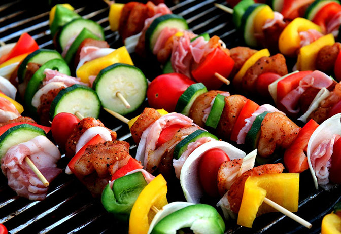

The Comfort of Homemade Food

There’s a unique charm in homemade meals, a warmth that no restaurant dish, no matter how expertly plated, can replicate. Homemade food carries memory, love, and tradition in every bite. From the smell of fresh bread baking in the oven to the gentle simmer of a stew on the stove, these meals evoke comfort and a sense of belonging. Each recipe tells a story — perhaps of a grandmother teaching her grandchild to knead dough, or a family gathering where everyone contributed a small part to the feast.
Unlike commercial food, which often focuses on presentation or trends, homemade cooking prioritizes connection. It’s the process, not just the final dish, that makes it special. The chopping of vegetables, stirring sauces, kneading dough, and tasting along the way create an intimate relationship between cook and meal. Cooking becomes a ritual, a form of mindfulness that allows us to slow down and savor life’s small joys.
Homemade meals also connect us to culture and heritage. Recipes passed down through generations are more than instructions — they are living memories. A spice blend might recall a grandmother’s kitchen, a holiday dish might bring back laughter from family dinners, or a regional specialty might tell a story of migration, adaptation, or local ingredients. Every flavor carries history, identity, and emotion.
Moreover, homemade food nurtures relationships. Preparing a meal for someone is an act of care. Sharing food strengthens bonds, opens conversations, and creates lasting memories. Even the simplest dish, shared with loved ones, can transform a regular day into something extraordinary. Families who cook together learn cooperation and patience; friends who exchange recipes create bridges of trust and creativity.
There’s also a health dimension. Homemade meals allow control over ingredients, portion sizes, and nutritional balance. You can choose fresh vegetables, whole grains, and quality proteins without worrying about preservatives, excessive sugar, or hidden fats that often hide in packaged or fast food. Cooking at home encourages experimentation with flavors and textures, turning nutritious ingredients into delicious experiences.
In today’s fast-paced world, where convenience often outweighs mindfulness, homemade cooking becomes a quiet rebellion. It is a commitment to care — for ourselves, our families, and even the planet. Using local produce, minimizing waste, and preparing meals from scratch reconnects us with the source of our food and fosters appreciation for the effort behind every ingredient.
Finally, homemade food is a celebration of creativity. Every cook interprets a recipe differently, improvises with what’s on hand, and infuses the dish with personal flair. No two home kitchens produce the exact same flavor — and that’s part of the magic. Cooking is an art form accessible to all, blending science, intuition, and love.
In the end, homemade food is more than sustenance. It is memory, culture, connection, health, and art. It teaches us patience, empathy, and mindfulness. It reminds us that the simplest pleasures — a steaming bowl of soup, the aroma of baked bread, a shared family meal — are often the most profound. Amid the noise of the modern world, homemade cooking offers a comforting, grounding rhythm: a reminder that care, love, and creativity can be tasted, one bite at a time.